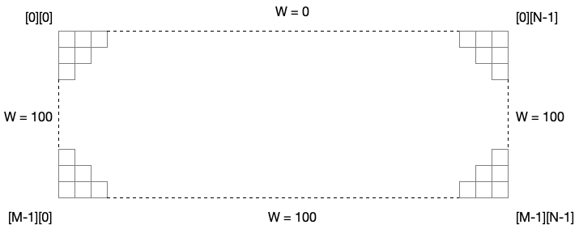
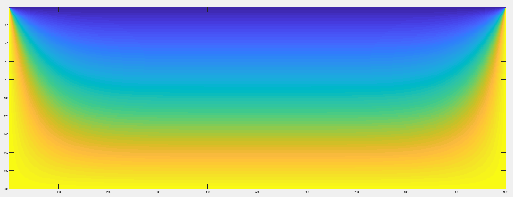

5. Programming Off-node Parallelism
Overview
This week we’re going to move off-node.
If you’ve not already completed the last exercise in the previous session, you should begin there (even if you didn’t finish all of the lab session). This will ensure you are able to log in to Viking, load modules, and submit jobs to the queue.
Once you’re up and running on Viking, it’s time to start writing some parallel applications and submitting job scripts.
Note: You should NEVER run parallel jobs on Vikings login nodes. These should always be done in job scripts or interactive sessions. Doing otherwise may result in a ban (which will significantly affect your ability to complete the assessment!)
Exercise 1
For this week’s first exercise, we’re going to revisit the Monte Carlo Pi code you wrote in the last session. You can start from your original (non parallel) version, or the OpenMP version (if you completed that exercise).
Take your code from last time and transform it in the following ways (in preparation for parallelising it over a cluster):
- Make it so that it operates in “rounds” (where a round is a set number of trials)
- Make it so that between each round it checks how close it is to
M_PI- Make it so that it finishes its computation if the difference between its calculated value of Pi and
M_PIis less than 1e-7As an example, you might like to make your program look approximately like the following psuedocode (where n is the size of a trial):
while abs(pi - M_PI) > tolerance: rounds = rounds + 1 for i: 0->n: perform a trial end for pi = (number in / total number) * 4 print "After $rounds rounds, the value of Pi is: $pi" end whileYou may like to experiment with the number of trials in each round (n) and the tolerance. Your answer will depend upon the randomness of your random number generator (based on the random seed), and the accuracy of floating point numbers. You may find that sometimes your code coverges very quickly while other times it never seems to converge. You might like to ignore the tolerance, and instead just perform a set number of rounds and report the answer after each round.
Exercise 2
Add MPI to your Monte Carlo Pi code. You could use point-to-point operations or collective operations to have each process perform their own set of rounds, aggregating their answers after each round.
Submitting Parallel/MPI Jobs to Viking
When submitting parallel jobs to Viking, you might find that additional arguments are required.
The Viking documentation provides a quick guide to using MPI jobs here: Jobscript Examples: MPI
In particular, you may need to specify the memory per CPU, the CPUs per task and the number of tasks per node.
For example:
#!/bin/bash
#SBATCH --time=00:10:00 # Maximum time (HH:MM:SS)
#SBATCH --ntasks=20 # run 20 tasks
#SBATCH --output=simple_job_%j.log # standard output and error log
#SBATCH --partition=teach # run in the teaching queue
#SBATCH --account=CS-TEACH-2023 # use the CS-TEACH account
#SBATCH --cpus-per-task=1 # use 1 CPU per task
#SBATCH --nodes=2 # use 2 nodes
#SBATCH --ntasks-per-node=10 # use 10 tasks per node
#SBATCH --mem-per-cpu=600mb # allocate 600mb memory per CPU
echo "Running mpi_example on ${SLURM_NTASKS} CPU cores"
mpiexec --display-map -n ${SLURM_NTASKS} ./my_code
This will run 20 ranks of “my_code” and will also display the mapping information (tasks to cores, etc.). It will run on 2 separate nodes, using 10 tasks on each node (Note: there are 96 CPU cores per Viking node).
When running you should be aware that there may be other tasks running on the same node, potentially affecting the performance of your application. If you would like exclusive access to your resources, you can specify the --exclusive configuration option, or ensure you request enough resources (i.e. 192 tasks, 2 nodes and 96 tasks per node should allocate 2 nodes exclusively, though this is not guaranteed).
Exercise 3
When benchmarking and analysing the performance of parallel applications, we are often interested in identifying performance bottlenecks. One common bottleneck is the network itself. It is often desireable to measure the performance of the communication channel, in order to understand whether communication latency or bandwidth is a bottleneck.
Build a simple network benchmark that tests the performance of point-to-point communications (often called a ping-pong test).
Vary the parameters (message sizes, etc.) and placement of processes on Viking (i.e. try to get the two processes running on different compute nodes so that communications have to travel over the InfiniBand network). Plot your answers on a graph. See how bandwidth varies with message size.
A Simple Steady-state Heat Equation
Attached File: heat_equation.c
The final problem for this week is to solve the steady state heat equation on a rectangular region, representing a plate heated along three edges to 100°C, and cooled to 0°C along the fourth edge.
The physical region, and the boundary conditions, are shown in Figure 1, where W represents the temperature.

Figure 1: The spatial grid for calculating the result of the heat equation.
The region is covered with a grid of M by N cells, and an M by N array W is used to record the temperature.
The steady state solution to the discrete heat equation satisfies the following condition at an interior grid point:
\[W_{Central} = \frac{W_{North} + W_{East} + W_{South} + W_{West}}{4}\]In other words, we calculate the value for any given grid point by taking the average of its 4 surrounding neighbours.
In our simulation, we begin with an initial guess for the solution (which is just the average of all the boundaries). We then iteratively find a ‘better’ solution, by replacing each interior point with the average of its 4 neighbours.
If this process is repeated often enough, the difference between successive estimates of the solution will go towards zero.
Below is a single-processor, single-threaded implementation of this solution to the problem.
#include <stdio.h>
#include <stdlib.h>
#include <math.h>
//size of plate
#define M 200
#define N 1000
double **alloc_2d_array(int m, int n) {
double **x;
int i;
x = (double **)malloc(m*sizeof(double *));
x[0] = (double *)calloc(m*n,sizeof(double));
for ( i = 1; i < m; i++ )
x[i] = &x[0][i*n];
return x;
}
void free_2d_array(double ** array) {
free(array[0]);
free(array);
}
int main(int argc, char *argv[]) {
printf("Heated Plate calculation\n");
// arrays for recording temperatures
double** u = alloc_2d_array(M, N);
double** w = alloc_2d_array(M, N);
double diff;
double epsilon = 0.00001;
int iterations;
int iterations_print;
double mean;
printf(" Spatial grid of %d by %d points.\n", M, N);
printf(" The iteration will be repeated until the change is <= %lf\n", epsilon);
// Set the boundary values, which don't change.
mean = 0.0;
for (int i = 1; i < M-1; i++) {
w[i][0] = 100.0;
w[i][N-1] = 100.0;
}
for (int j = 0; j < N; j++) {
w[M-1][j] = 100.0;
w[0][j] = 0.0;
}
// Average the boundary values, to come up with a reasonable initial value for the interior.
for (int i = 1; i < M-1; i++) {
mean += w[i][0] + w[i][N-1];
}
for (int j = 0; j < N; j++) {
mean += w[M-1][j] + w[0][j];
}
mean = mean / (double) ( 2 * M + 2 * N - 4 );
printf("\n MEAN = %lf\n", mean);
// Initialize the interior solution to the mean value.
for (int i = 1; i < M - 1; i++) {
for (int j = 1; j < N - 1; j++) {
w[i][j] = mean;
}
}
// iterate until the new solution W differs from the old solution U by no more than EPSILON.
iterations = 0;
iterations_print = 1000; // print an update every 1000 iterations
diff = epsilon;
while (epsilon <= diff) {
// Save the old solution in U.
for (int i = 0; i < M; i++) {
for (int j = 0; j < N; j++) {
u[i][j] = w[i][j];
}
}
// Determine the new estimate of the solution at the interior points.
// The new solution W is the average of north, south, east and west neighbors.
for (int i = 1; i < M - 1; i++) {
for (int j = 1; j < N - 1; j++) {
w[i][j] = (u[i-1][j] + u[i+1][j] + u[i][j-1] + u[i][j+1]) / 4.0;
}
}
// find the largest diff between the old and new values
diff = 0.0;
for (int i = 1; i < M - 1; i++) {
for (int j = 1; j < N - 1; j++) {
if (diff < fabs(w[i][j]-u[i][j])) {
diff = fabs(w[i][j]-u[i][j]);
}
}
}
iterations++;
if (iterations % iterations_print == 0) {
printf(" %8d %f\n", iterations, diff);
}
}
printf("\n %8d %f\n", iterations, diff);
printf("\n End of execution.\n");
// write output to a csv file
FILE *output = fopen("./output.csv", "w");
for (int i = 0; i < M; i++) {
for (int j = 0; j < N-1; j++) {
fprintf(output, "%lf,", w[i][j]);
}
fprintf(output, "%lf\n", w[i][N-1]);
}
fclose(output);
free_2d_array(w);
free_2d_array(u);
}
You may note the use of a 2D allocation function (alloc_2d_array()). This function is a “hack” that allocates a contiguous block of memory for the 2D grid and allows us to reference values using square brackets.
At the end of execution, the result is written out to a file (in CSV). Plotting the data using Matlab produces the following result:

Figure 2: The result of the steady state heat equation on a 200 x 1000 grid.
Exercise 4
Parallelise the Heat Equation code (in 1 dimension) using MPI. You do not need to parallelise the file output (you could disable it for the sake of this exercise, but check that your answer is the same!).
Hints: You will likely need to do the following things:
- Calculate the start and end offset for each processor (which will be the problem size divided by the number of processors plus ghost cells). You will need a single ghost column (or row, depending on parallelisation dimension) on rank 0 and rank N-1. You will need two ghost columns on all other processes.
- Update the allocations to only allocate the space required for each process.
- If you’re parallelising in the x-dimension, you may need a column datatype (see Unit 6 for information on halo exchanges).
- You will need to correct the boundary conditions (the left and right most boundary conditions are only required on processes 0 and N-1).
- You will need to update the calculation of the initial conditions (i.e. the mean calculation, and subsequent assignment for the grid).
- You will need to perform boundary exchanges. You can use
Sendrecvoperations withMPI_PROC_NULLto account for processes 0 and N-1.- You will need to take into account the parallelisation when calculating the largest difference in the grid.
If you’re getting stuck, go back to pen and paper. Make liberal use of
printfcommands to make sure you’re calculating parameters correctly.